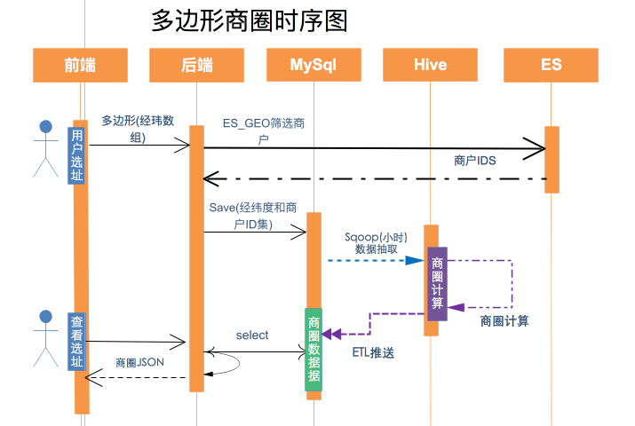

多边形选址功能实现
Don’t be jealous of others. Because you never know how much you will get in the next second.
这个多边形选址功能实现在很多互联网公司进行区域规划时都有涉及，我在饿了么实习的时候，这个是做的第一个项目，为了不泄漏公司业务，主要讲解下大致的需求以及实现的技术实现点，包括自己的一些想法。在说具体技术之前，首先真的要表扬一下，饿了么的技术栈的实例还是非常强大的，在里面学习了很多的知识。
项目主要需求
用户在前端地图上画一个多边形，可以计算出这个多边形内可以统计的数据，当然还涉及其它的业务流程和数据统计
项目涉及的技术点
ES，因为数据量非常的庞大，并且是进行一个地理多边形查询，故选用ElasticSearch作为技术支撑。
各个项目之间都是独立的，当需要其它接口数据的时候，需要引入其它项目对外提供的接口包，通过SOA接口进行相应调用。
ES原生用的是json类型的数据格式进行数据查询访问，在项目中集成使用并不是很方便，所以利用一个开源的框架（ESSQL)，可以 通过利用类似于SQL的方式进行查询。
ESSQL具体技术实现
如果采用原生json类型的格式，可以通过如下的方式进行查询：
GET /_search
{
"query": {
"bool" : {
"must" : {
"match_all" : {}
},
"filter" : {
"geo_polygon" : {
"person.location" : {
"points" : [
{"lat" : 40, "lon" : -70},
{"lat" : 30, "lon" : -80},
{"lat" : 20, "lon" : -90}
]
}
}
}
}
}
}当采用ESSQL时，可以使用如下表示：
String sql = "select shop_id,name as full_name, city_id,city_name from shop where
city_id="+city_id.intValue()+
" and GEO_POLYGON(shop_location,"+latlons.toString()+")";
List<ShopEsVo> shopEsVoList = SqlQuery.getInstance().toBeanList(sql,ShopEsVo.class);通过这种sql方式可以让我们更加直观对ES进行操作。当然通过ES还可以计算给个一个圆心和半径圆内的数据，以及一条直线上的数据，使用ES相对来说比较简单，但是ES内部涉及到很多的算法以及底层的lucene，接下去都要花时间好好去学一下。ES适合用来存储查询远远大于修改的数据，并且在数据量很大的🈴️，或者需要进行一些模糊匹配的时候，能够利用倒排索引对数据进行快速的处理。但是这并不表示，它能替代MySQL，ES 做的工作主要是搜索，它没有事务，权限控制等功能，并且有可能会造成数据丢失。并且MySQL是关系型数据库，对于强关系型的数据需要MySQL来进行相应的维护。
想法和接下去的目标
之前有听说过ES，但是一直没有时间去学习，在这次项目做的过程中，通过对需求的了解明白了ES的一些实际使用价值，并且学习了一些ES的基础知识和框架，接下去需要系统学习ES里面的核心知识与算法。
ESSQL参考地址 https://github.com/Anchormen/sql4es
